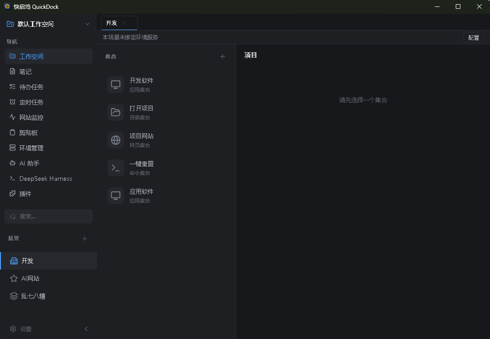
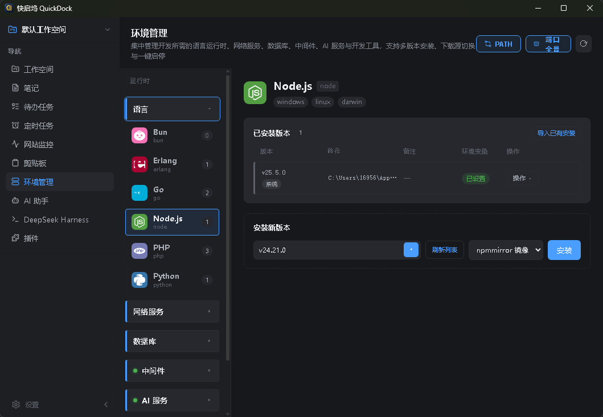
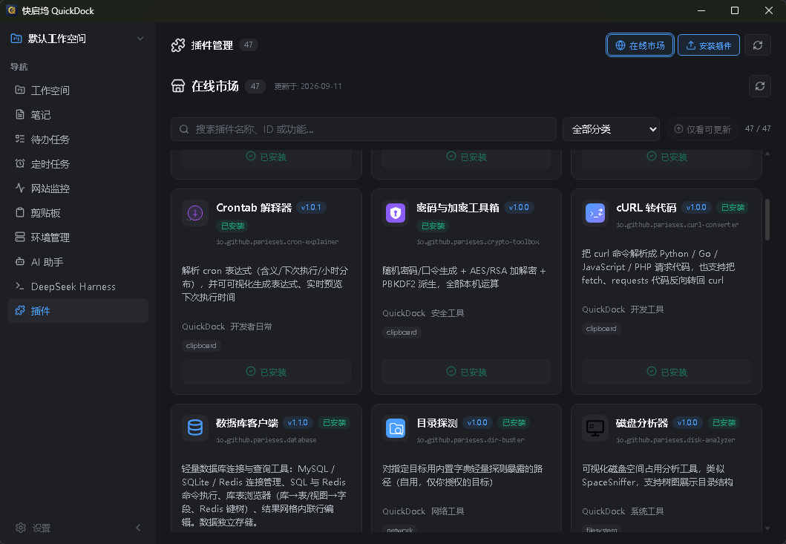
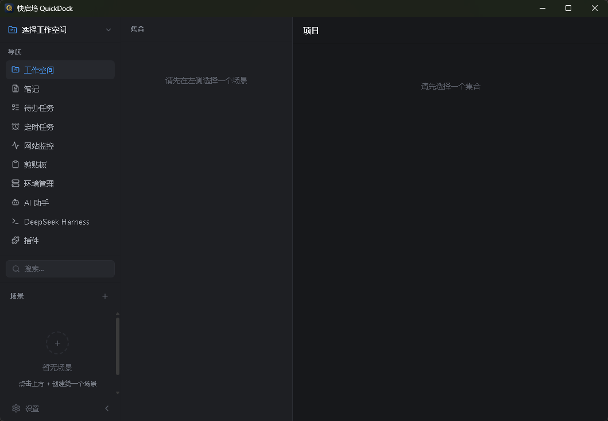
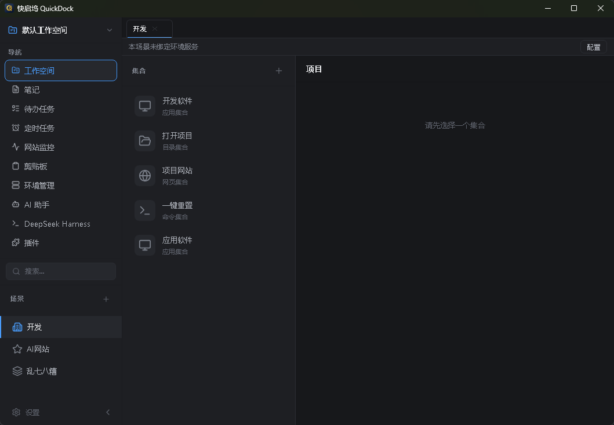

命令面板
一个 Ctrl+K 搜遍全部资源，FTS5 全文索引，键盘直达不用摸鼠标。
- 工作空间 / 场景 / 集合 / 项目统一搜索
- 多选批量操作、最近与最常使用排序
- 粘贴 URL 自动识别并建档
命令面板唤起一切，28 个运行时一键装切，47 个插件开箱即用，再顺手把本地能力通过 MCP 开放给 AI。 Raycast 的速度 + VS Code 的开发者体验，打包进一个不到 100MB 的桌面应用。

项目、目录、命令、网址、剪贴板、笔记、待办……不用再在开始菜单和文件夹之间来回横跳。
一个 Ctrl+K 搜遍全部资源，FTS5 全文索引，键盘直达不用摸鼠标。
工作空间 → 场景 → 集合 → 项目四层结构，按项目上下文隔离，切换关注点只在一瞬。
文本、图片、文件全记录，浮动窗口失焦即隐，Ctrl+` 一键唤出。
Ctrl+Shift+N 唤起浮动笔记，文件夹 + Markdown 多层级组织，500ms 防抖自动保存。
列表 + 看板双视图，子任务、标签、重复规则与到期提醒齐全，专注结束还能推 Webhook。
定时探测状态码与响应时间，SSL 到期预警、关键字匹配、在线率统计，异常走桌面通知和 Webhook。
内置多档案 AI 助手（OpenAI / DeepSeek / Kimi / 通义 / Ollama / Azure / 自定义），SSE 流式输出、思考过程折叠、Token 统计，API Key 在 Windows 下用 DPAPI 加密存储。同时内嵌 DeepSeek Harness —— 一键装填 node + dsh 环境，原生窗口承载完整 Agent 编程入口，关窗不停服务。
不写注册表、不申请管理员、不污染系统 PATH。多版本共存于用户目录，切换只是一点，删掉 QuickDock 就全没了。
版本列表来自官方源或国内镜像，GitHub Releases API 优先、HTML 兜底，换源后一键重拉。
服务型运行时支持启动 / 停止 / 重启，Nginx、Caddy、Apache 等启动前先跑配置校验，失败直接拦住。
实时滚动查看进程日志尾部，MinIO / Mailpit / Traefik / RabbitMQ 等提供 Web 控制台一键直达。

三种运行时：纯前端（none）、内嵌 JS 引擎（goja）、独立子进程（native），统一走 JSON-RPC 2.0。宿主开放 27 个 Host API，从文件读写到 MCP 复用，能力面三者一致。

16 节完整教程：前 3 节跑通基础，4—10 节覆盖日常功能，11—14 节是进阶玩法，最后两节讲数据备份和出问题怎么查。按顺序走一遍，或者用左侧目录直接跳。
quickdock-amd64-installer.exe — 推荐。默认落到 %LOCALAPPDATA%\Programs\快启坞，自动更新最省事quickdock-amd64.exe — 单文件直接跑。只要放在当前用户可写的目录（别放 Program Files），同样支持就地更新quickdock-amd64-installer.exe 并双击，一路默认不要改安装路径。C:\Program Files\...。那里写文件要过 UAC，就地替换更新会失败，只能每次手动下安装包覆盖。已经装错了？卸掉重装到用户目录即可，数据在 ~/.quickdock 不受影响。
顶栏放搜索框、端口全景（一眼看全本机服务占用）和设置入口。主题支持深色 / 浅色 / 跟随系统，设置里切换，插件窗口会同步适配。
侧边栏 / 顶栏可进入：工作空间、环境管理、插件（已装 + 市场）、待办、定时、监控、端口全景、AI 助手、DeepSeek Harness、设置（通用 / 热键 / AI / DSH / 快照 / 同步 / 工具）。
默认只有四个全局热键，先记住它们就够用一整天。
「设置 → 热键」里逐条改，改完运行时动态重注册，不用重启。捕获新按键时会暂停全局监听，避免和你正在按的组合撞车。改乱了想还原，设置页里有恢复默认。
面板里还能直接粘贴网址 —— 会自动识别并帮你建成项目，不用手动填表单。
锁屏、关机、重启、睡眠、清空回收站也能在应用里直接触发，不用再去开始菜单点。
QuickDock 用四层结构收纳一切资源。看着层级多，实际就一句话：按项目上下文分堆，再按关注点分页。
Workspace（工作空间） — 顶级容器，隔离不同项目上下文 └── Scene（场景） — 标签 / 图标 / 颜色，快速切换关注点 └── Collection（集合） — 逻辑分组，可设打开策略与关联工具 └── Item（项目） — 真正要打开的那个东西
directory目录 — 用资源管理器或终端打开file文件 — 用系统默认程序打开url网页链接 — 用浏览器打开command终端命令 — 在终端里执行app应用程序 — 指定可执行文件路径quicklink快速链接 — 带参数的快捷方式hj 能找到「环境」）
整个应用的核心入口。Ctrl+K 唤起，一个框搜遍全部资源，回车即执行 —— 手不用离开键盘。
后台自动监听剪贴板，文本、图片、文件都记，Ctrl+` 随时翻旧账。
~/.quickdock/images/想彻底不留痕迹：设置里关掉对应类型的记录（比如不记图片）。
Ctrl+Shift+N 唤起浮动笔记，随手记；要整理时进「笔记管理」页面，用树形结构归档。
在待办页选中一个任务启动倒计时，专注期间就盯着这一件事。倒计时结束弹系统通知，还可以配一个 Webhook 推送到手机（钉钉 / 企微 / 飞书等），离开电脑也收得到。
给自己负责的站点挂个探活，出问题第一时间知道，不用等别人来问。
「Webhook 设置」里填渠道地址即可，支持 钉钉 / 企业微信 / 飞书 / Server酱 / PushPlus / Telegram。状态翻转（正常 ↔ 异常）时才推，不会一直刷屏。桌面端同时弹系统通知。
五种动作 × 五种调度，组合出你要的自动化。
典型用法：每天早上九点自动拉起一整套开发环境（终端 + 目录 + 后台页面）；每天晚上定时调一次接口触发备份。
把开发环境当成可装卸的模块：装、切、启停、改配置、看日志，全在一个页面。所有版本落在 ~/.quickdock/runtime/<name>/<version>/，不写注册表、不改系统 PATH，删掉 QuickDock 就一起没了。
Caddyfile / redis.conf / nginx.conf / traefik.yml / php.ini / frpc.toml 等nginx -t / caddy validate / apache -t），失败直接拦住不启动程序目录固定 runtime/ollama/，不带版本号、不做多版本并存 —— 单份约 1.4GB 且独占 11434 端口，多版本纯属浪费。有新版本时侧栏只提示不自动动，你点「更新」才走原地替换（下载 → 暂存 → 校验 → 替换），任何一步失败当前版本都不受影响，ollama.env 配置保留。
模型库默认与系统安装版共用 ~/.ollama/models，不用重下几十 GB。模型管理（列表 / 拉取 / 删除 / 查看已加载）都在界面里，走本地 REST API。卸载只删程序，绝不碰模型目录。
「插件市场」里 47 个官方插件一键安装 / 升级 / 卸载 / 启用禁用，装完还能给插件单独绑热键。
none纯前端，没有后端进程，最轻量goja内嵌 JavaScript 沙箱，能跑逻辑不需要额外依赖native独立子进程，能用系统级能力（如调用外部程序）三者都通过 JSON-RPC 2.0 与宿主通信，能力面一致。插件装到 ~/.quickdock/plugins/<id>/。
permissions.filesystem 声明目录 scope，读写越界直接拒绝permissions.network 声明域名白名单，只放行列表里的域名宿主开放 27 个 Host API（日志、通知、剪贴板、对话框、KV 存储、文件读写、网络请求、Shell 打开、进程管理，以及复用宿主 MCP 的 host.mcp.call）。最小骨架：
// none 运行时最小集：plugin.json + icon.svg + frontend/ { "id": "io.github.parieses.my-plugin", "name": "我的插件", "version": "0.0.1", "runtime": "none", "entry": "index", // 不要写扩展名 "permissions": { "filesystem": ["~/Downloads"], "network": ["api.example.com"] } }
完整开发文档与模板在 quickdock-plugins 仓库。
和上面那个聊天框不是一回事 —— 这是内嵌的完整 Agent 环境，带工具、文件、终端、会话。
@deepseek-ai/dsh，日志逐行可见~/.dsh 数据目录（皮肤 / 插件 / 会话），设置页可直接装 DSH 插件QuickDock 自暴露一个 MCP（Model Context Protocol）服务，把本地能力开放给 AI 客户端 —— 让 AI 能真的操作你的环境，而不是只聊天。
http://127.0.0.1:9230/mcp。{
"mcpServers": {
"quickdock": {
"type": "http",
"url": "http://127.0.0.1:9230/mcp"
}
}
}
29 个工具分三级权限门：只读 17 个（查环境、搜项目、看待办笔记、查端口、读日志）、低危写 10 个（起停服务、建待办、写笔记、复制剪贴板）、高危 2 个（杀进程、执行系统命令，默认关闭）。完整清单见下方 MCP 章节。
设置 → 快照：一键把全部数据导出成一个 JSON 文件，换机器导入即恢复。升级前顺手存一份最保险。
设置 → 同步：填任意 WebDAV 服务器（自建 / 坚果云 / 第三方都行），全量备份与恢复，支持多版本管理，误操作能回滚到之前的版本。
~/.quickdock/quickdock.dbSQLite 主库（WAL 模式）~/.quickdock/images/剪贴板图片~/.quickdock/plugins/已安装插件~/.quickdock/runtime/各运行时版本~/.quickdock/logs/日志，按天分文件%APPDATA%/QuickDock/应用配置~/.quickdock 下任何数据；跨版本配置迁移由数据库迁移逻辑负责。启动后自动拉取签名清单并验签 → 有新版本提示 → 你点「重启更新」→ helper 进程在主程序退出后备份旧文件、覆盖新文件（失败自动回滚）→ 重新拉起应用。不弹 UAC、不跑安装器。
~/.quickdock/update-guard.json 强制重试。这个文件记录「已替换但版本号没变」的目标版本，连续 2 次未生效会自动忽略该版本~/.quickdock/logs/quickdock-YYYY-MM-DD.log；更新替换日志 %TEMP%\wails-update-<pid>.log把本地开发能力开放给智能体：环境、项目、待办、笔记、剪贴板、端口、日志、崩溃记录，全部可被 AI 调用。写操作分低危 / 高危，高危默认关闭。
app_info · env_list · env_status · env_log · env_versions · workspace_list · item_search · recent_items · todo_list · note_search · clipboard_recent · port_list · log_list · log_read · crash_list · crash_read · plugin_list
env_start · env_stop · env_restart · item_open · todo_create · todo_done · clipboard_copy · note_create · note_update · note_quick · plugin_execute
process_kill · system_command（需在环境管理页手动开启高危等级）
插件也可通过 host.mcp.call 复用全部 29 个工具，沿用同一套等级门，无需额外声明权限。
# POST only；GET 返回 405，DELETE 关会话返回 204 curl -X POST http://127.0.0.1:9230/mcp \ -H "Content-Type: application/json" \ -d '{ "jsonrpc": "2.0", "id": 1, "method": "tools/call", "params": { "name": "env_list", "arguments": {} } }'
services/mcp，工具经 Wails 各领域门面转发到宿主开源免费。装完自动检查更新，点「重启更新」就地替换，不弹 UAC、不跑安装器，数据和插件全部保留。
~/.quickdock/runtime/，不写注册表、不改系统 PATH、不申请提权。删掉 QuickDock，运行时一起没。~/.quickdock 下的数据库、插件、运行时目录全部保留。跨版本配置变化由数据库迁移逻辑处理。permissions.filesystem 目录 scope 和 permissions.network 域名白名单，宿主逐次校验，越权直接拒绝。插件不能弹系统对话框，文件选择统一走宿主 API。_windows / _darwin / _unix 拆文件，但目前官方只发 Windows 产物，Linux 尚未纳入发布流程。http://127.0.0.1:9230/mcp 加为 HTTP 类型 server，即可调用 29 个工具。高危工具需要你先在环境管理页手动开启。